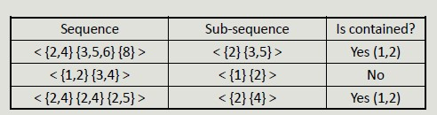

Sequential Pattern
Often, temporal information is associated with transactions, allowing events concerning a specific subject to be linked together.
A sequence is an ordered list of elements, each of which contains a set of events (items). Each item is associated with a specific time instant or ordinal position.
The length of the sequence is given by the number of elements in it.
Sub-sequence
We have sequences (like ordered purchase list from the same customer) and sub-sequences are sequences contained in a sequence where the mapping respects the order.

The support of a sub-sequence w is defined as the fraction of sequences that contain w.
Mining Sequential Pattern
Given a database of sequences and a minimum support threshold, minsup find all subsequences whose support is >= minsup
Apriori Principle can be applied to sequential pattern mining since any sequence s that contains a particular k-sequence must contain all (k - 1) subsequences of s.
The steps to follow in this process, include:
- Run an initial scan of the sequence DB to locate all 1-sequence
- Repeat until new frequent sequences are discovered
- Candidate generation: find pairs of frequent subsequences found in step k-1 to generate candidate sequences containing k items
- Candidate pruning: eliminate k candidate sequences that contain (k-1) subsequences that are not frequent
- Support counting: scan the DB to find the support of candidate sequences
- Candidate elimination: eliminate candidate k-sequences whose support is actually less than minsup

Searching for sequential patterns is a difficult problem given the exponential number of subsequences contained in a sequence.
Temporal Constraints
Temporal constraints increase the expressiveness of sequential pattern by better defining their structure.
- MaxSpan defines the maximum time interval between the first and the last sequence element
- MinGap defines the minimum gap between events belonging to two different elements
- MaxGap defines the maximum gap between events belonging to two consecutive elements
Sequence Mining with Temporal Constraints
Temporal constraints impact on sequence supports as some patterns counted as frequent may not be true because some of the sequences in their support may violate a time constraint.
It is necessary to modify the counting technique to account for this problem.
The Time Window Size (ws) conversely relaxes the support basic definition as it specifies the interval within which two events occurring at different times should be considered simultaneous.
Created: November 15, 2022 09:09:02